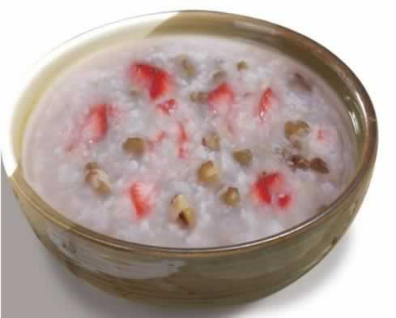
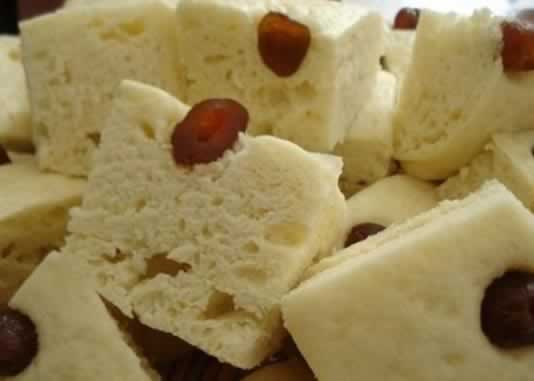

如何通过调整饮食改善睡眠
许多准妈妈在孕晚期睡眠质量不高，一晚上要起夜许多次，或是总也找不到合适的睡姿，想到马上就要与宝宝见面了，夜里更是辗转反侧，从而影响第二天的精神状态，甚至影响食欲对胎宝宝发育不利。那么，怎么能让准妈妈的睡眠变得好一些呢，如何通过饮食改善睡眠呢？以下对你有5条建议。
1、睡前别吃胀气食物：有些食物在消化过程中会产生较多的气体，从而产生腹胀感，妨碍正常睡眠。如豆类、包心菜、洋葱、土豆、红薯、芋头、香蕉、面包、柑橘类水果及甜点等。
2、睡前别吃过辣过咸的食物：辣椒、大蒜及生洋葱等辛辣的食物，会造成胃部灼热及消化不良，从而干扰睡眠。高盐食物会使人摄取太多钠离子，促使血管收缩，血压上升，导致情绪紧绷，造成失眠。
3、睡前别吃过于油腻的食物：晚餐丰盛油腻，或进食一堆高脂肪的食物，会加重肠、胃、肝、胆和胰的工作负担，刺激神经中枢，让它一直处于工作状态，也会导致失眠。最聪明的做法是，把最丰盛的一餐安排在早餐或午餐，晚餐则吃得少一点、清淡一点，比如，晚餐吃一些清淡的菜肴，如西芹百合，这样的晚餐能起到安眠的作用。
4、晚饭巧吃蔬菜：晚饭尽量多吃水煮、清炖、清蒸食物，少吃煎炸、烧烤类食物。另外，食物宜软不宜硬，尤其做米饭时，应尽量软一点。
5、睡前喝温牛奶：因牛奶中含有一种能使人产生疲倦欲睡的生化物L色氨酸，能使大脑思维活动暂时受到抑制，从而使人想睡眠，并且无任何副作用，而且牛奶粘在胃壁上吸收也好，牛奶中的钙还能清除紧张情绪，所以晚上喝杯温牛奶利于准妈妈的睡眠。
本周推荐尝试食谱1：
草莓绿豆粥
推荐理由：此粥清淡适宜，可增加食欲，并满足胎儿对多种营养素的需求。
食谱原料：
糯米250克，绿豆100克，草莓250克，白糖适量。
制作方法：
1、绿豆挑去杂质，淘洗干净，用清水浸泡4小时；草莓择洗干净。
2、糯米淘洗干净，与泡好的绿豆一并放入锅内，加入适量清水，用旺火烧沸后，转微火煮至米粒开花，绿豆酥烂，加入草莓、白糖搅匀，稍煮一会儿即成。
本周推荐尝试食谱2：
二米面发糕
推荐理由：小米营养丰富，含有较丰富的蛋白质、脂肪、钙、铁和维生素B1。
食谱原料：
小米面500克，面粉50克，红小豆100克，鲜酵母10克。
制作方法：
1、将红小豆淘洗干净，煮熟备用。
2、面粉加鲜酵母和较多的温水和成稀面糊，静置发酵。待发酵后加入小米面和成软面团发好。
3、将蒸锅内的水烧开，铺上屉布，把和好的面团先放入1/3，用手蘸清水轻轻拍平；将煮熟的红小豆撒上1/2，铺平；再放入剩余面团的1/2拍平；将余下的红小豆放上，铺平；最后将面团全部放入，用手拍平，盖严锅盖，用旺火蒸15分钟即成。